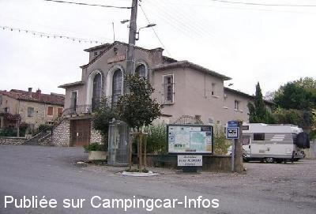
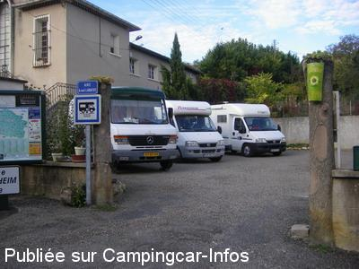
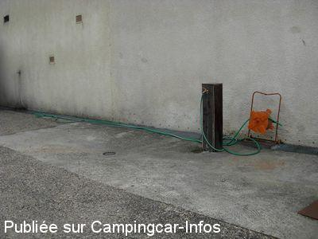

ASN = Aire de services avec stationnement nuit possible de :
SAINT PUY
(N° 681)
Accès/adresse :
Grande Rue
32310 SAINT PUY
32310 SAINT PUY
Latitude : (Nord) 43.87598° Décimaux ou 43° 52′ 33′′
Longitude : (Est) 0.46243° Décimaux ou 0° 27′ 44′′
Tarif : Gratuit
Services :


Tous commerces
Autres informations :
Ouverte toute l'année
3 emplacements
Tel : +33(0)562 285 509
mairie-saint-puy@wanadoo.fr

Le 03/12/2011 par rault.eric

Le 28/10/2008 par

Le 02/09/2008 par thierry.vandermeersch
de
Clau
le 19/11/2013 :
Aire agréable au milieu du village entre la boulangerie et la salle des fêtes. Nuit calme début Novembre 2013.
Village à découvrir ainsi que la ferme de foie-gras qui accueille aussi les camping-cars.
Aire agréable au milieu du village entre la boulangerie et la salle des fêtes. Nuit calme début Novembre 2013.
Village à découvrir ainsi que la ferme de foie-gras qui accueille aussi les camping-cars.
de
Michel
le 13/06/2011 :
pas de changement sur cet emplacement à l'entrée étroite et au nombre d'engins limité à 3 ou 4 mais c'est propre et bien fait. Etape à privilégier vu ce qu'on trouve aux alentours.
pas de changement sur cet emplacement à l'entrée étroite et au nombre d'engins limité à 3 ou 4 mais c'est propre et bien fait. Etape à privilégier vu ce qu'on trouve aux alentours.
de
Wintz
le 09/03/2009 :
Aire située au centre du village à côté de la salle des fêtes. Petites commerces à proximité. Calme même le weekend, mais attention au grand gabarit, accès et manœuvres délicates.
Aire située au centre du village à côté de la salle des fêtes. Petites commerces à proximité. Calme même le weekend, mais attention au grand gabarit, accès et manœuvres délicates.
de
Rolf Ca.
le 02/02/2009 :
richtig, am norwestlichen Stadtrand bietet sich für 3-4 Mobile abends ein ruhiger Übernachtungsort vor dem Friedhof an. ein durchweg ebener Parkplatz mit freier Sicht gen Süden steht hier zur Verfügung
ca.GPS-Pos. 0.46188°/43.87772°
bon voyage
richtig, am norwestlichen Stadtrand bietet sich für 3-4 Mobile abends ein ruhiger Übernachtungsort vor dem Friedhof an. ein durchweg ebener Parkplatz mit freier Sicht gen Süden steht hier zur Verfügung
ca.GPS-Pos. 0.46188°/43.87772°
bon voyage
de
Eric
le 11/11/2008 :
De passage le 10 et 11 novembre 2008 dans ce petit village très agréable avec un mot à l'entrée du maire dont nous remercions la gratuité de ces services ainsi que les commerces de l'accueil.
Il y a les eaux usées. On peut remplir l'eau propre.
Il y a une salle pour les toilettes qui est sur le côté de la salle des fêtes.
pour la lumière il faut appuyer assez fort sur l'interrupteur.
De passage le 10 et 11 novembre 2008 dans ce petit village très agréable avec un mot à l'entrée du maire dont nous remercions la gratuité de ces services ainsi que les commerces de l'accueil.
Il y a les eaux usées. On peut remplir l'eau propre.
Il y a une salle pour les toilettes qui est sur le côté de la salle des fêtes.
pour la lumière il faut appuyer assez fort sur l'interrupteur.
de
NONO81
le 28/10/2008 :
De passage le 5/10/08 nous avons trouvés cette aire agréable passé une bonne nuit.Merci à la ville de Saint Puy que nous avons aussi visitée.
De passage le 5/10/08 nous avons trouvés cette aire agréable passé une bonne nuit.Merci à la ville de Saint Puy que nous avons aussi visitée.
de
Elter
le 11/05/2008 :
de passage le 03/05/08
aire pleine, mais possibilité de stationner un peut plus haut devant le cimetière avec une très belle vue
de passage le 03/05/08
aire pleine, mais possibilité de stationner un peut plus haut devant le cimetière avec une très belle vue
de
Françoise et Régis DUBRUN
le 29/10/2007 :
Peu de place mais aire très propre au centre d'un village bien agréable. Un texte d'acuueil très sympathique est affiché à l'entrée. A noter un très bon restaurant près de la halle où nous avons pu apprécier notamment un excellent foie gras poëlé ! Nous avons en outre déposé un petit message de félicitation à destination de la municipalité dans la boîte disposée à cet effet.
Peu de place mais aire très propre au centre d'un village bien agréable. Un texte d'acuueil très sympathique est affiché à l'entrée. A noter un très bon restaurant près de la halle où nous avons pu apprécier notamment un excellent foie gras poëlé ! Nous avons en outre déposé un petit message de félicitation à destination de la municipalité dans la boîte disposée à cet effet.